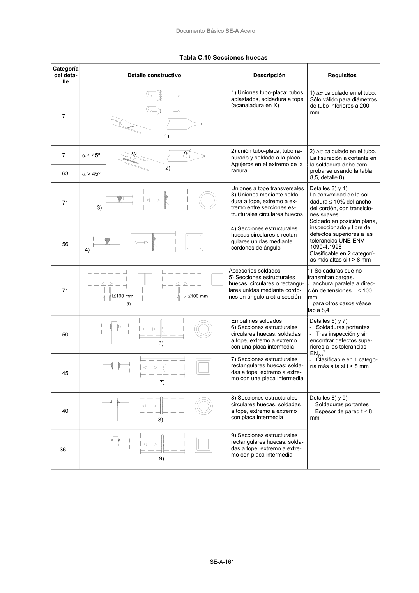

DB-SE-A Acero · edición 2007-10-23 · capa oficial
Documento DB-SE-A-oficial · SHA-256 del PDF 9ed9ea694aabfbda3bfbbef40dfe9223fde05d13c35bc2ba9751e5a96a22a64f
Página física 163 de 168.
Copia fiel del PDF fuente · Fuente oficial
Ficha de la disposición en la fuente oficial
Formato: Texto de la página (Markdown)
Documento Básico SE-A Acero SE-A-161 Tabla C.10 Secciones huecas Categoría del deta- lle Detalle constructivo Descripción Requisitos 71 1) Uniones tubo-placa; tubos aplastados, soldadura a tope (acanaladura en X) 1) ∆σ calculado en el tubo. Sólo válido para diámetros de tubo inferiores a 200 mm 71 α ≤ 45º 63 α > 45º 2) unión tubo-placa; tubo ra- nurado y soldado a la placa. Agujeros en el extremo de la ranura 2) ∆σ calculado en el tubo. La fisuración a cortante en la soldadura debe com- probarse usando la tabla 8,5, detalle 8) 71 Uniones a tope transversales 3) Uniones mediante solda- dura a tope, extremo a ex- tremo entre secciones es- tructurales circulares huecos 56 4) Secciones estructurales huecas circulares o rectan- gulares unidas mediante cordones de ángulo Detalles 3) y 4) La convexidad de la sol- dadura ≤ 10% del ancho del cordón, con transicio- nes suaves. Soldado en posición plana, inspeccionado y libre de defectos superiores a las tolerancias UNE-ENV 1090-4:1998 Clasificable en 2 categorí- as más altas si t > 8 mm 71 Accesorios soldados 5) Secciones estructurales huecas, circulares o rectangu- lares unidas mediante cordo- nes en ángulo a otra sección 1) Soldaduras que no transmitan cargas. - anchura paralela a direc- ción de tensiones L ≤ 100 mm - para otros casos véase tabla 8,4 50 Empalmes soldados 6) Secciones estructurales circulares huecas; soldadas a tope, extremo a extremo con una placa intermedia 45 7) Secciones estructurales rectangulares huecas; solda- das a tope, extremo a extre- mo con una placa intermedia Detalles 6) y 7) - Soldaduras portantes - Tras inspección y sin encontrar defectos supe- riores a las tolerancias ENyyy 2 - Clasificable en 1 catego- ría más alta si t > 8 mm 40 8) Secciones estructurales circulares huecas, soldadas a tope, extremo a extremo con placa intermedia 36 9) Secciones estructurales rectangulares huecas, solda- das a tope, extremo a extre- mo con placa intermedia Detalles 8) y 9) - Soldaduras portantes - Espesor de pared t ≤ 8 mm

Datos candidatos: compruebe celdas y notas en el PDF.